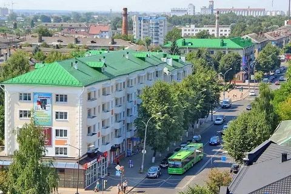

Город Барановичи появился в конце 1871 года в связи с началом движения поездов по участку железной дороги, связывающему между собой Смоленск и Брест. Название новая станция получила от располагавшийся недалеко от нее деревни Барановичи. Первыми жителями нового поселения стали семьи железнодорожных работников.Через некоторое время в 2,5 км от него появилась станция Новые Барановичи, возникшая в результате запуска участка железнодорожных путей Вильна — Ровно, в 1986 году присоединенного к сети Полесской железной дороги.
В 1890 году эти два поселка слились в один, который начал интенсивно развиваться. Здесь были построены завод по производству сухарей, мельница и пакгаузы. Постоянными жителями Барановичей, который в 1894 году уже являлся уездным городом , стали приехавшие сюда бригады железнодорожных работников и отряды пехотного полка.Барановичи – это молодой быстро развивающийся город, один из крупнейших промышленных и культурных центров Беларуси. Возникновение его связано со строительством Московско-Брестской железной дороги. Начало городу положила небольшая станция этой дороги, сданная в эксплуатацию в ноябре 1871 года, получившая своё название от одной из близлежащих деревень. Официальная дата рождения города – 29 ноября 1871 года.
Таким образом, в 1897 году количество населения достигло почти 9 тыс. человек, были организованы двухклассные школы и открыто 4 предприятия. Но при этом полностью отсутствовало какое-либо благоустройство — не было освещения, тротуаров, церкви и даже больницы и пожарного обоза.
поселение все же развивалось, и появившийся пролетариат начал борьбу за свои права, ведь все продукты и необходимые предметы быта были очень дорогими. Таким образом, в конце 1905 года произошла стачка железнодорожников, их выступление привело к большому количеству арестов и тому, что в Барановичах было объявлено военное положение. После начала Первой мировой войны в окрестностях Барановичей были сосредоточены крупные военные силы, причем здесь располагался главный штаб всех вооруженных сил России — Ставка Верховного Главнокомандующего. В результате того, что операция Скорбово-Городищенская была проиграна, город был оккупирован кайзеровскими войсками и 2 года в Барановичах проходила линия фронта. Лишь в начале 1919 года немецкие войска покинули территорию поселения.
| 2000 | 2005 | 2010 | 2015 | 2020 | |
| Женщины | |||||
| 70к | 74к | 80к | 87к | 90к | |
| Мужчины | |||||
| 63к | 69к | 74к | 80к | 85к | |
| вернуться в начало | |||||